Crides de funció: CPU, registres i stack
Bloc 1 · Desenvolupament de Programari en Espai d’Usuari
Introducció
Crides de funció: CPU, registres i stack
Què passa realment quan fem foo()?
Objectius d’aprenentatge
- Reconstruir el mecanisme complet d’una crida de funció, de principi a fi
- Distingir RIP/RSP/RBP i els seus equivalents PC/SP/X29 en AArch64
- Explicar què és una calling convention i quin paper hi juga l’ABI
- Identificar quins registres ha de preservar una funció (caller-saved vs callee-saved)
- Observar aquests conceptes en execució real amb GDB
Prerequisits
- Espai d’adreces d’un procés: TEXT, DATA, HEAP, STACK
- Concepte de stack frame i lifetime d’una variable automàtica
- Sintaxi bàsica de funcions en C
On ens vam quedar?

El punter d’instrucció
Un programa és una seqüència d’instruccions
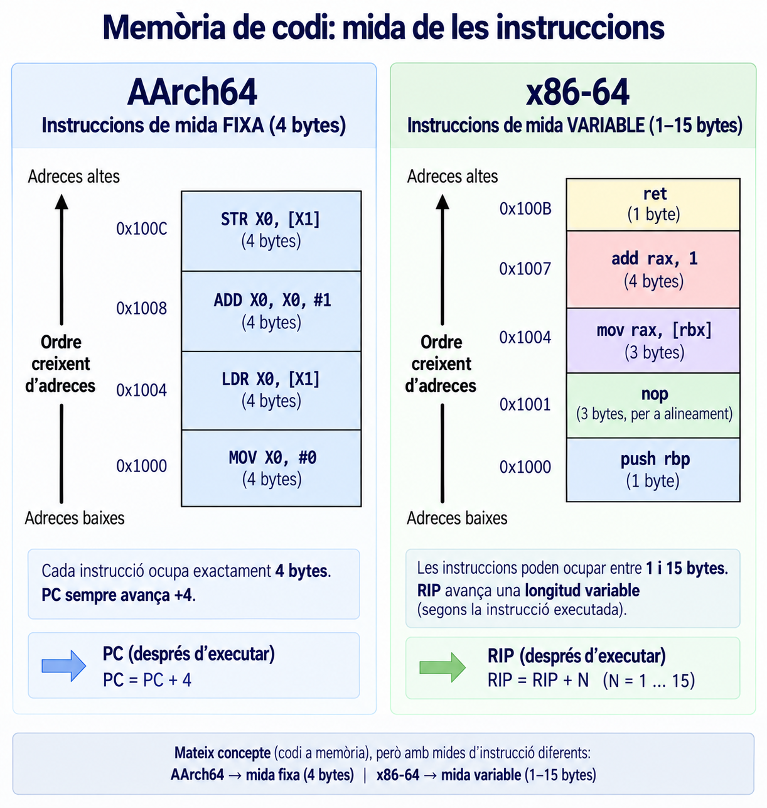
La CPU executa instruccions una darrere l’altra sequencialment.
Les instruccions poden ser de diferents tipus (aritmètiques, de salt, de càrrega,…) i la seva mida no és sempre la mateixa: en x86-64 és variable (entre 1 i 15 bytes segons la instrucció); en AArch64 és fixa, sempre 4 bytes.
Per això en AArch64 la instrucció següent sempre és PC + 4. En x86-64, RIP + 4 no funciona en general — cal conèixer la longitud real de la instrucció actual per saber on comença la següent.
Com sap la CPU quina instrucció ha d’executar?
RIP: Instruction Pointer
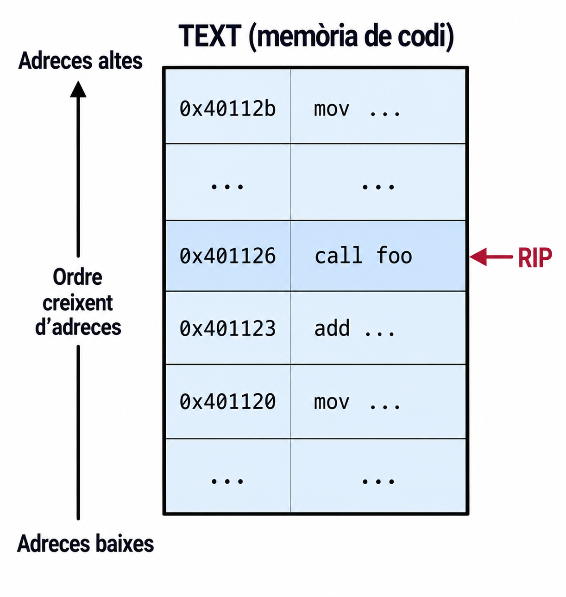
- x86-64:
RIP: Instruction Pointer. - AArch64:
PC: Program Counter.
El nom canvia, però el concepte és el mateix: indicar on continua l’execució.
Return address i call/ret
Ara fem foo()
Return address
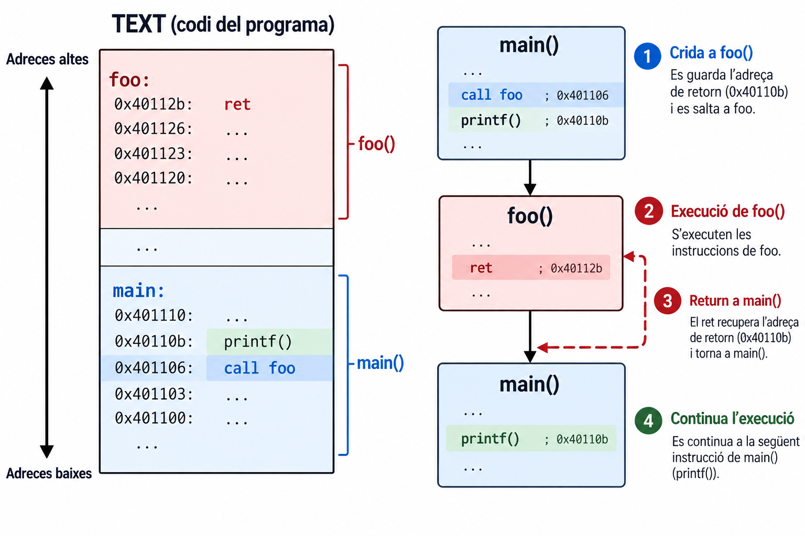
Return address: la instrucció a la qual cal tornar un cop acabada la funció cridada.
Una crida de funció necessita conservar el punt al qual haurà de tornar.
call i ret (x86-64)
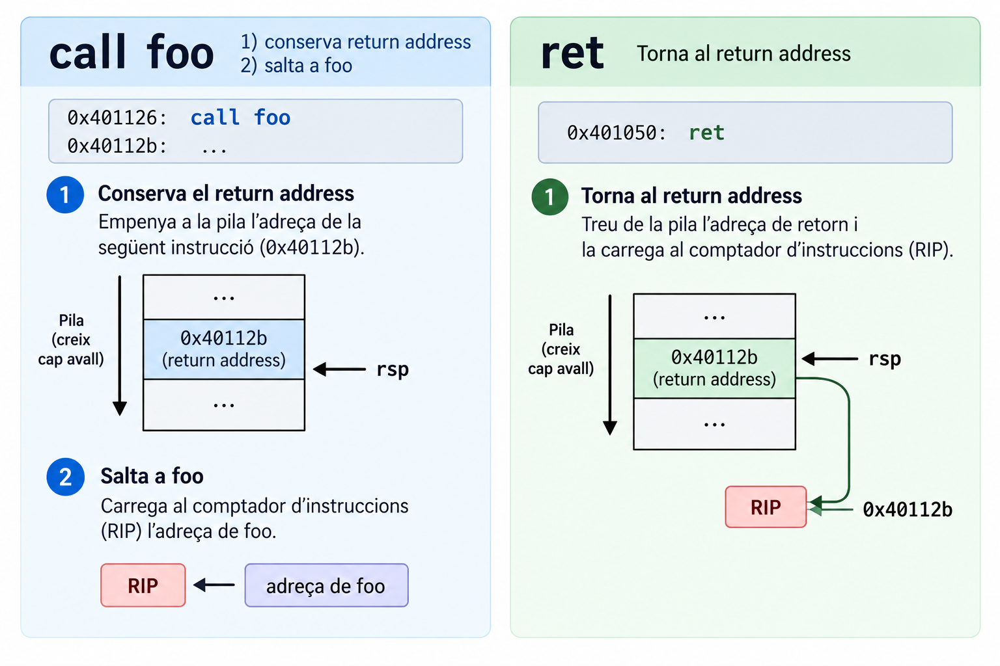
BL i RET (AArch64)
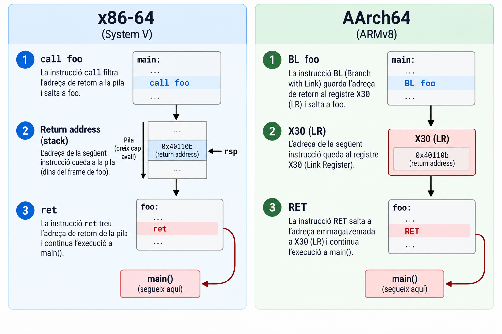
BL foo salta a foo i desa l’adreça de retorn a X30 (Link Register).
El mecanisme físic canvia (pila vs. registre), però C no en sap res: foo() és foo() en ambdues arquitectures. L’ABI i el maquinari decideixen com es representa la crida. El llenguatge només veu l’abstracció crida una funció i torna. Aquesta separació entre abstracció i mecanisme és la mateixa raó per la qual el mateix codi C es pot compilar per a qualsevol de les dues.
I si foo() mateixa crida bar()? BL bar torna a escriure X30 — qui preserva llavors l’adreça de retorn original de foo()? (hi tornarem amb caller-saved / callee-saved)
El stack pointer
Però… on està el stack?
La STACK és una regió de memòria que creix cap a adreces més baixes. Per tant, cal un registre que indiqui on és el top actual del stack.
- RSP (x86-64): Stack Pointer.
- SP (AArch64): Stack Pointer.
RSP / SP
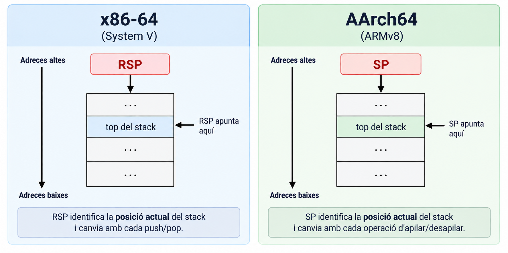
RSP/SP identifica la posició actual del stack: push i pop (x86-64) el modifiquen.
Per a AArch64 no parlem de push/pop com a instruccions literals — el model conceptual és el mateix, però la implementació és diferent.
Una funció necessita espai
El stack frame — recordatori

Stack frame: la part del stack associada a una activació d’una funció (Sessió 1).
No existeix un únic format universal de stack frame. Depèn de l’arquitectura, l’ABI/calling convention, el compilador i les opcions d’optimització.
El problema de RSP
El frame pointer
RBP: Frame Pointer
RBP — Frame Pointer (x86-64).
RSP→ posició actual del stack.RBP→ referència estable al frame.RSPpot moure’s.RBPes manté fix mentre dura l’activació.
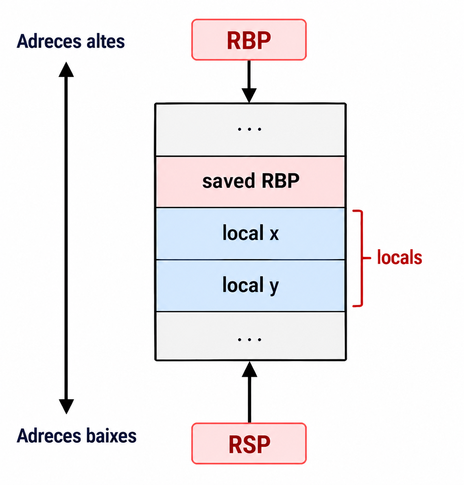
AArch64: X29
x86-64
RBP→ frame pointer
AArch64
X29→ frame pointerX30→ link register
El paper conceptual és el mateix però els registres tenen noms diferents.
Construint el frame (x86-64)
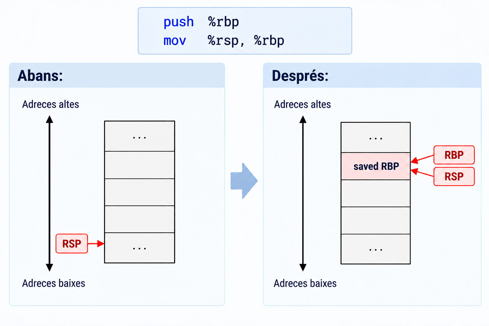
Aquest és el patró clàssic. Els compiladors moderns poden ometre el frame pointer (frame pointer omission, típic amb -O2).
Destruint el frame
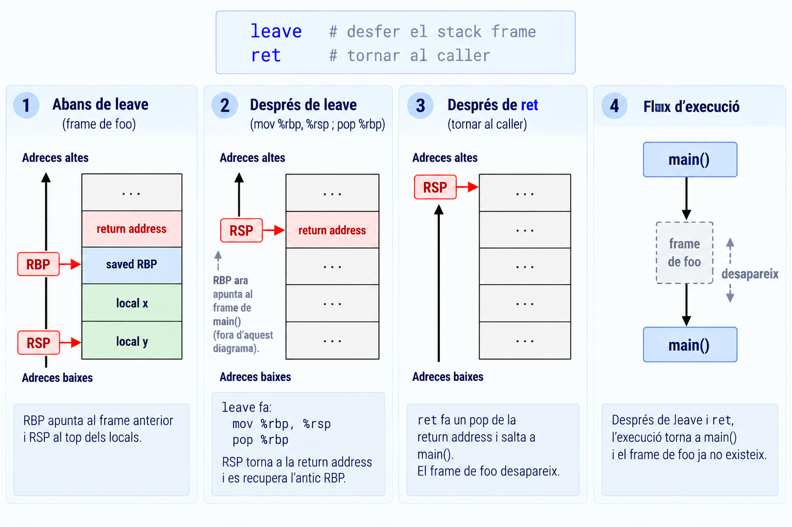
Arguments i ABI
I els arguments?
Quan main() crida suma(10, 20), on són a i b?
Al stack. \(\Rightarrow\) No necessàriament.
Calling convention
Calling convention: com es passen els arguments, on es retorna el resultat, quins registres cal preservar, i com es relacionen caller i callee.
C defineix la funció. L’ABI defineix com caller i callee es comuniquen.
System V AMD64: pas d’arguments

Arguments 1–6 (enters/punters) → RDI, RSI, RDX, RCX, R8, R9. Valor de retorn → RAX.
AArch64: pas d’arguments

Arguments 1–8 (enters/punters) → X0–X7. Valor de retorn → X0.
La calling convention és específica de l’ABI: 6 registres en System V AMD64, 8 en AArch64.
I si no caben als registres?
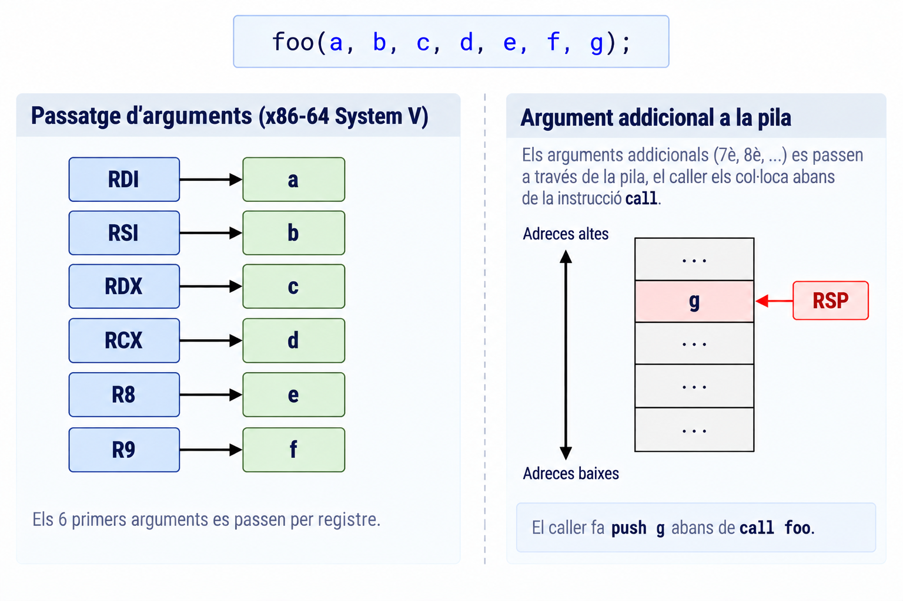
Model simplificat: el tractament real també depèn del tipus i de la classificació dels arguments (p. ex. enters vs. punt flotant) definida per l’ABI.
No tots els registres es tracten igual
Caller-saved
RAXRCXRDXRDIRSIR8-R11
Callee-saved
RBXRBPR12–R15
Si foo() modifica RBX, qui ha de garantir que el valor original es conserva?
RBX és callee-saved: és foo() qui ha de preservar-lo, no qui la crida. No cal memoritzar tota la llista, però sí saber distingir les dues categories.
AArch64: caller / callee saved
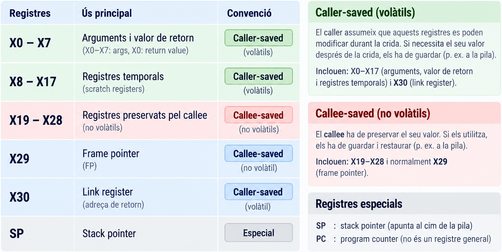
Síntesi
Posem-ho tot junt
main()posa arguments aRDIiRSIi facall suma. (2)suma()crea frame, executa i deixa el resultat aRAX. (3)rettorna amain(),RIPapunta amain()iRAXconté el resultat.
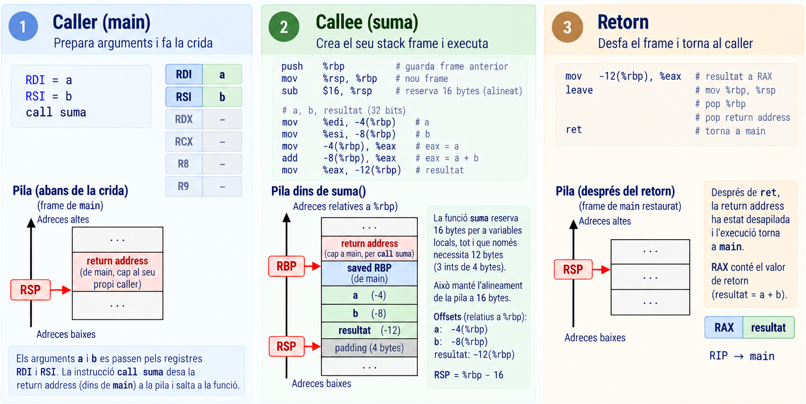
Ho podem observar?
Abans de mirar-ho, prediu:
- On creieu que estarà el valor
10? - I el
20? - Quan fem
call, què espereu que canviï? - Què passarà amb
RSP?
GDB en directe
Coincideix amb la vostra predicció? On és RIP? On és RSP? On és RBP? On són els arguments? Què hi ha al stack?
Del dibuix al programa real
El model que hem construït (RIP → codi, RSP → stack, RBP → frame, RDI/RSI → arguments, RAX → retorn) no és només un dibuix: podem observar-ne parts en un programa real amb GDB.
x86-64 i AArch64 — síntesi final
| Concepte | x86-64 | AArch64 |
|---|---|---|
| Instruction pointer | RIP | PC |
| Stack pointer | RSP | SP |
| Frame pointer | RBP | X29 |
| Return/link | stack (via call) |
X30 (via BL) |
| Arguments | RDI…R9 | X0…X7 |
| Return value | RAX | X0 |
- Una funció en execució té una activació associada al stack.
- La CPU utilitza registres per gestionar l’execució, el stack i els arguments.
call/retiBL/RETimplementen el mecanisme de crida segons l’arquitectura.- L’ABI defineix com caller i callee es comuniquen.